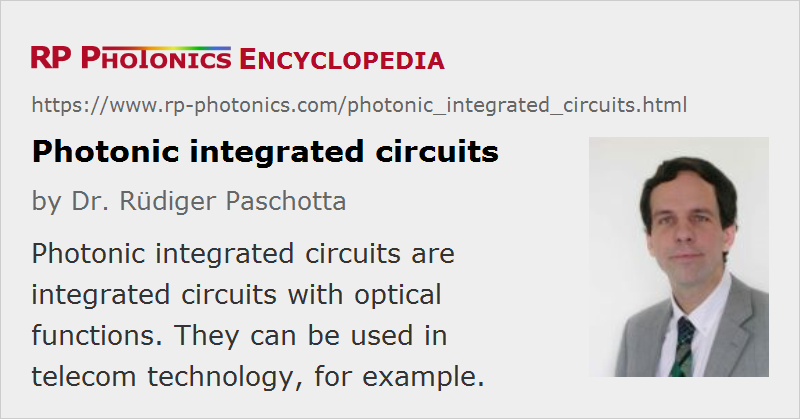

Photonic Integrated Circuits
Acronym: PIC or PLC = planar lightwave circuit
Definition: integrated circuits with optical functions
Alternative term: planar lightwave circuits
German: photonische integrierte Schaltungen
Categories: photonic devices, optoelectronics, lightwave communications
How to cite the article; suggest additional literature
Author: Dr. Rüdiger Paschotta
Photonic integrated circuits (also called planar lightwave circuits = PLC or integrated optoelectronic devices) are devices on which several or even many optical (and often also electronic) components are integrated. The technology of such devices is called integrated optics. Photonic integrated circuits are usually fabricated with a wafer-scale technology (involving lithography) on substrates (often called chips) of silicon, silica, or a nonlinear crystal material such as lithium niobate (LiNbO3). The substrate material already determines a number of features and limitations of the technology:
- Silica-on-silicon integrated optics builds on silicon wafers, for which many aspects of the powerful microelectronics technology can be used. Silica waveguides allow the realization of couplers, filters (e.g. for multiplexers and demultiplexers in wavelength division multiplexing technology), power splitters and combiners, and even active elements with optical gain. They can also be connected to optical fibers.
- An area of strong current interest is silicon photonics, where photonic functions are implemented directly on silicon chips.
- An already commercialized photonic integrated circuits technology is based on indium phosphide (InP); it is used mainly in optical fiber communications.
- Waveguides can be fabricated on silica glass (fused silica) e.g. with lithographic techniques involving chemical processing or indiffusion of dopants, or with laser micromachining. The latter techniques can be used for fabricating waveguides far below the surface (embedded waveguides), so that three-dimensional circuit designs become possible. Amplifiers and lasers can be made by using rare-earth-doped glasses.
- Lithium niobate (LiNbO3) as a nonlinear crystal material is suitable for devices performing nonlinear functions, for example electro-optic modulators or acousto-optic transducers. Waveguides can be fabricated on lithium niobate substrates e.g. via proton exchange or by indiffusion of titanium, in any case controlled by a lithographic method. Doping with rare earth ions makes possible amplifiers and lasers. The birefringence of this material creates opportunities for polarization control, which may then be used e.g. for filtering purposes. On the other hand, the birefringence makes it more difficult to obtain polarization-independent devices, as are often required for optical fiber communications.
Photonic integrated circuits can either host large arrays of identical components, or contain complex circuit configurations. However, for various reasons the complexity achievable is not nearly as high as for electronic integrated circuits. Their main application is in the area of optical fiber communications, particularly in fiber-optic networks, but they can also be used for, e.g., optical sensors and in metrology.
An important distinction is that between devices with smaller or larger mode areas:
- Some waveguides (e.g. made in silicon-on-insulator technology) exhibit strong confinement, leading to small effective mode areas and allowing for tight bends without excessive bend losses. They are therefore potentially suitable for chips with a very high level of integration. However, such devices are essentially always polarization dependent, having a strong built-it birefringence. Polarization-insensitive designs would be possible in principle, but would introduce unrealistic fabrication tolerances.
- Other waveguides exhibit much weaker guidance and can be made in polarization-insensitive form. However, such waveguides do not allow tight bends and thus prevent a high level of integration.
Suppliers
The RP Photonics Buyer's Guide contains 9 suppliers for photonic integrated circuits. Among them:
Questions and Comments from Users
Here you can submit questions and comments. As far as they get accepted by the author, they will appear above this paragraph together with the author’s answer. The author will decide on acceptance based on certain criteria. Essentially, the issue must be of sufficiently broad interest.
Please do not enter personal data here; we would otherwise delete it soon. (See also our privacy declaration.) If you wish to receive personal feedback or consultancy from the author, please contact him e.g. via e-mail.
By submitting the information, you give your consent to the potential publication of your inputs on our website according to our rules. (If you later retract your consent, we will delete those inputs.) As your inputs are first reviewed by the author, they may be published with some delay.
Bibliography
| [1] | F. A. Kish et al., “Current status of large-scale InP photonic integrated circuits”, IEEE Sel. Top. Quantum Electron. 17 (6), 1470 (2011), doi:10.1109/JSTQE.2011.2114873 |
| [2] | W. S. Zaoui et al., “Bridging the gap between optical fibers and silicon photonic integrated circuits”, Opt. Express 22 (2), 1277 (2014), doi:10.1364/OE.22.001277 |
| [3] | L. Li, “Integrated flexible chalcogenide glass photonic devices”, Nature Photon. 8, 643 (2014), doi:10.1038/nphoton.2014.138 |
| [4] | L. A. Coldren and S. W. Corzine, Diode Lasers and Photonic Integrated Circuits, John Wiley & Sons, New York (1995) |
See also: integrated optics, silicon photonics, optical fiber communications, fiber to the home
and other articles in the categories photonic devices, optoelectronics, lightwave communications
|  |
If you like this page, please share the link with your friends and colleagues, e.g. via social media: 


These sharing buttons are implemented in a privacy-friendly way! |
2020-05-24
Are quantum integrated photonic circuits and photonic integrated circuits the same?
Answer from the author:
Quantum integrated photonic circuits are specifically those where quantum optics effects are exploited – for example, in the context of quantum information processing.